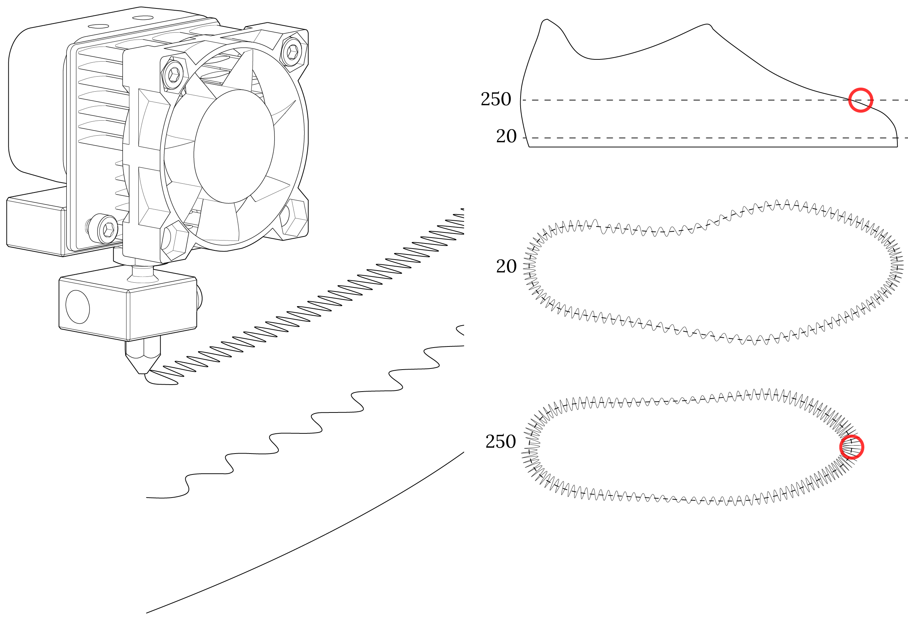

In late 2015, A small startup called
FEETZ approached us with a manufacturing problem.
They wanted to create an efficient way to manufacture a completely 3D printed shoe, from sole to upper.
Company: Feetz

Typical g-code includes three different parts: the inside layer, the outside layer and the "infill." We developed a
sine wave path algorithm that replaces the three path types with a single path, reducing the print time by over 600%.